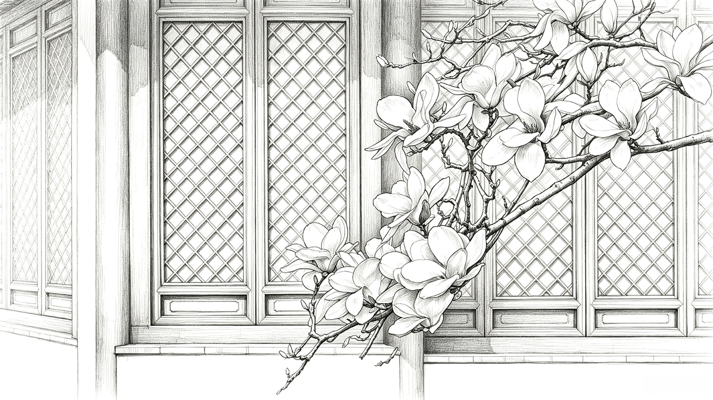
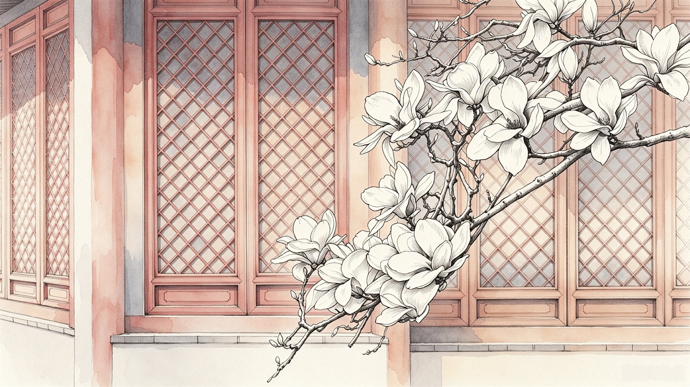
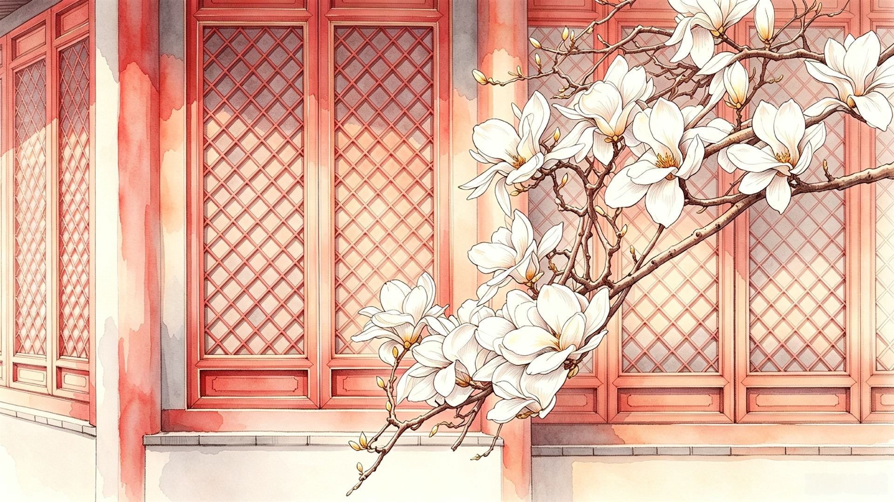

京
京华自然
BEIJING NATURE CHRONICLE / 01
首页
花木
湿地
鸟类
古树
山地
观赏攻略
自然文脉
发展之路
返回分类页面



京华自然志 · 图鉴
北京早春 · 玉兰
玉兰
白色花冠，像一段安静而明亮的春风。
Magnolia denudata
BEIJING / SPRING
01 — 10
玉兰分节
北京玉兰
01
花期与形态
02
栽植环境
03
城市分布
04
物种特征
北京 · 玉兰分类
01
花期与形态
返回玉兰首页
从形态到颜色
01
花期与形态
玉兰在早春开放，花朵常先于叶片舒展。